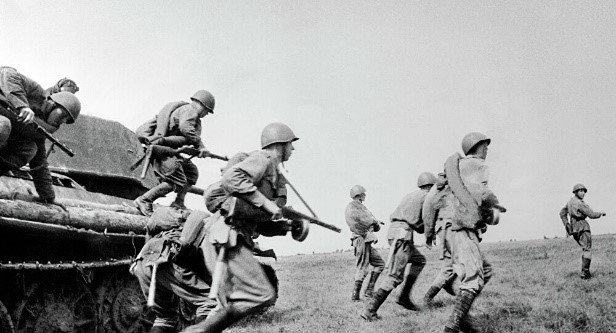

Fue un conflicto militar global que se desarrollo entre 1939 y 1945. En ella se vieron implicadas la mayor parte de las naciones del mundo, incluidas todas las grandes potencias, agrupadas en dos alianzas militares enfrentadas: los aliados de la Segunda Guerra Mundial y las potencias del eje. Fue la mayor contienda belica de la historia, con mas de cien millones de militares movilizados y un estado de «guerra total» en que los grandes contendientes destinaron toda su capacidad economica, militar y cientifica al servicio del esfuerzo belico, borrando la distincion entre recursos civiles y militares. Marcada por hechos de enorme repercusion que incluyeron la muerte masiva de civiles -el Holocausto, los bombardeos intensivos sobre ciudades y el uso, por unica vez, de armas nucleares en un conflicto militar- la Segunda Guerra Mundial fue la mas mortifera de la historia con un resultado de entre 50 y 70 millones de victimas, el 2,5 % de la poblacion mundial.
El comienzo del conflicto se suele situar en el 1 de septiembre de 1939, con la invasion alemana de Polonia, el primer paso belico de la Alemania nazi en su pretension de fundar un Tercer Reich aleman sobre Europa. Esto produjo la inmediata declaracion de guerra de Francia con la mayor parte de los paises del Imperio britanico y la Commonwealth al Tercer Reich. Desde finales de 1939 hasta inicios de 1941, merced a una serie de fulgurantes campanas militares y la firma de tratados, Alemania conquisto o sometio gran parte de la Europa continental. En virtud de los acuerdos firmados entre los nazis y los sovieticos, la nominalmente neutral Union Sovietica ocupo o se anexiono territorios de las seis naciones vecinas con las que compartia frontera en el oeste. El Reino Unido y la Commonwealth se mantuvieron como la unica gran fuerza capaz de combatir contra las potencias del eje en el Norte de Africa y en una extensa guerra naval. En junio de 1941 las potencias europeas del eje comenzaron la invasion de la Union Sovietica, iniciando asi la mas extensa operacion de guerra terrestre de la Historia, en la que desde ese momento se empleo la mayor parte del poder militar del Eje. En diciembre de 1941 el Imperio del Japon, que habia estado en guerra con China desde 193723 y pretendia expandir sus dominios en el Sudeste Asiatico, ataco a los Estados Unidos y a las posesiones europeas, francesas, britanicas y neerlandeses en Asia y el oceano Pacifico, conquistando rapidamente gran parte de la region.
El avance de las fuerzas del Eje fue detenido por los aliados en 1942 tras la derrota de Japon en varias batallas navales y de las tropas europeas del Eje en el Norte de Africa y en la decisiva batalla de Stalingrado. En 1943, como consecuencia de los diversos reveses de los alemanes en Europa del Este, la invasion aliada de la Italia Fascista y las victorias de los Estados Unidos en el Pacifico, el Eje perdio la iniciativa y tuvo que emprender la retirada estrategica en todos los frentes. En 1944 los aliados occidentales invadieron Francia, al mismo tiempo que la Union Sovietica recupero las perdidas territoriales y ambos invadian Alemania.
La guerra acabo con una victoria total de los aliados sobre el eje en 1945 y la liberacion de los prisioneros en campos de exterminio. La guerra en Europa termino con la captura de Berlin por tropas sovieticas y polacas y la consiguiente rendicion incondicional alemana el 8 de mayo de 1945. La Armada Imperial Japonesa resulto derrotada por los Estados Unidos y la invasion del archipielago japones se hizo inminente. Tras el bombardeo atomico sobre Hiroshima y Nagasaki por parte de los Estados Unidos y la invasion sovietica de Manchuria, la guerra en Asia termino el 15 de agosto de 1945 cuando Japon acepto la rendicion incondicional.